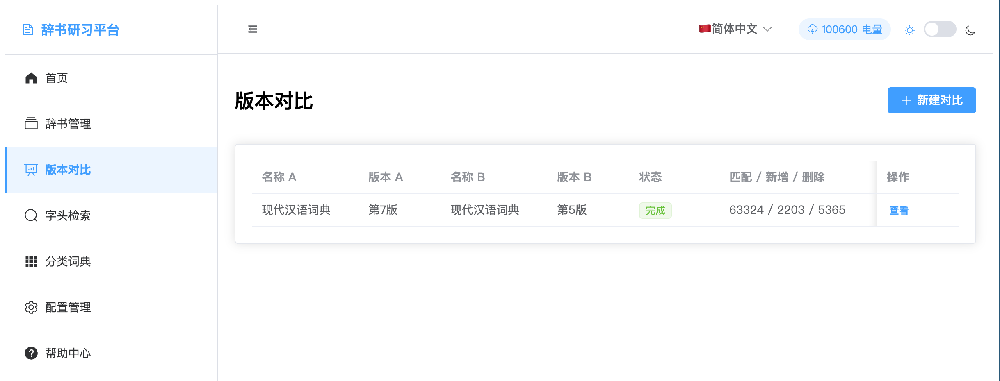
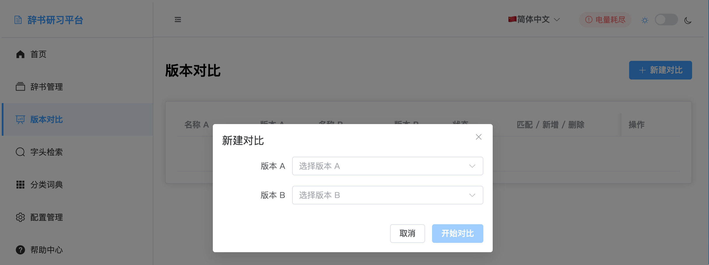
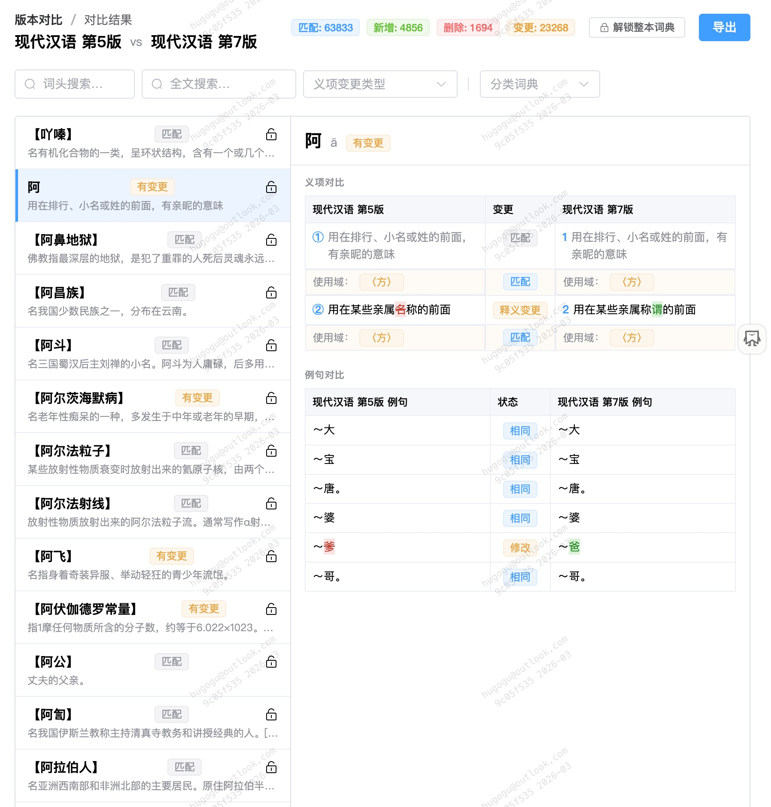

The version comparison function is the core analysis tool of the Dictionary Research Platform. Through intelligent algorithms, it compares two dictionary versions, identifying added, deleted, and modified entries, providing detailed statistical analysis and visual presentation.
Automatically identify entry changes, including additions, deletions, modifications, etc.
Provide detailed statistics and change trend analysis
Display comparison results intuitively through charts and network graphs
Provide detailed comparison analysis results and statistics

Version comparison list interface
The comparison interface displays all created comparison tasks, including compared dictionary versions, status, statistical information, and operation options.
Identify quantities and content of added, deleted, and modified entries
Compare additions, deletions, and modifications of definition content
Analyze changes in part-of-speech annotations
Compare additions, deletions, and modifications of examples
On the version comparison page, select the two dictionary versions to compare.

Select two versions to compare
Click the "Start Comparison" button, and the system will automatically analyze differences between the two versions.
After comparison is complete, view detailed statistical information and change analysis.

Comparison results statistics interface
The system will automatically analyze differences between the two versions, providing detailed statistical information and change analysis.
Entries present in both versions, content may have changes
Entries appearing for the first time in the new version
Entries removed in the new version
Entries with content changes
Study the evolution patterns between dictionary versions and analyze historical trends in vocabulary development
Provide data support for linguistics research and analyze semantic changes in vocabulary
Help dictionary compilers understand differences between versions and optimize compilation work
Check the editorial quality of new dictionary editions and discover possible errors and omissions
Use advanced algorithms for entry matching, considering multiple similarity factors
Optimized algorithms ensure fast comparison analysis for large-scale dictionaries
Precisely identify various types of changes, including subtle semantic differences
Support real-time comparison, timely understanding of latest changes in dictionary content